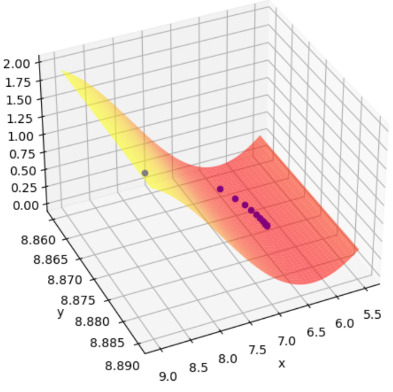

This essay is certainly not revolutionary, and I'd argue there's not much new 'maths' in here, though there is one example I particularly like demonstrating the Armijo and Wolfe conditions for the 2D Griewank function. That said, it was certainly a valuable experience in undertaking some independent research, managing my time and formulating formal mathematics - a skill which we practice in parts but not in longer form as is required here. A beamer presentation was also created alongisde, although, as it was only delivered to a small group of my peers, all the sources were stripped out for brevity and thus I do not want to publish this. Below I have copied, verbatim, the Introduction of the essay.
The need for optimisation is self-evident. A computer needs to make best use of its finite processing capacity and memory when running a program. A racing car engineer needs to decide how best to design each component to reduce drag. A chemist needs to determine how much of each compound they will add to their drug. All of these are examples of optimisation problems, though of course not all will be approached in the same way.
We will often model a phenomenon which has a number of inputs and will wish to minimise (or indeed maximise) some quantitative output. If these input parameters can take any value, unconstrained optimisation tools for multivariable functions can be incredibly powerful in helping us to very quickly find a suitable (if not truly optimal) solution. Of course, we must be careful in deciding whether we want to find the true minimum output over all possible outputs (that is to say we are looking to find a global minimum) or simply the minimum output over a neighbourhood of input values (a local minimum). The former problem is certainly much harder to solve than the latter, and thus we will focus only on finding local minima for our optimisation problems.
In this essay, we will consider the optimisation problem of finding a local minimum over some subset of $\mathbb{R}^{n}$ for continuously differentiable model functions from $\mathbb{R}^{n}$ to $\mathbb{R}$. This differentiability assumption is of course not necessary, although whilst methods exist for finding local or global minima which do not rely on differentiability, for example the Nelder and Mead Prototype method [5, pp.90--93, see Bibiography], Forst and Hoffmann note that even in the simplest settings, 'the method does not necessarily converge to a stationary point – and if it converges, then often very slowly.' It is generally more fruitful (as well as efficient) to take differentiability for granted, which is certainly sensible if our modelled problem is stable: that is to say small changes in input parameters lead only to small changes in our observed output.
I am hesitant to upload too much of the essay here as it has not been through any sort of peer review process, though if you are especially keen please do reach out using the contact email on the home page. Again, I'd stress that there aren't really any new ideas which could be dangerous if assumed (incorrectly) to be true and so this shouldn't be a disadvantage to the wider accademic community, not least as it is a very elementary text. A key section of the essay discusses the Armijo and Wolfe conditions and how, for a sufficiently nice function, step sizes which satisfy both of these conditions can be used to guarantee convergence of an inexact line search.

In the figure to the right we consider the 2D Griewank function, \[ f \left( x, y \right) = \frac{{x}^{2} + {y}^{2}}{4000} - \cos \left( x \right) \cos \left( \frac{y}{\sqrt{2}} \right) + 1, \] and apply the Gradient Descent method $\mathbf{d_k} = -\nabla f \left( \mathbf{x_k} \right)$, starting from $\mathbf{x_0} = (2 \sqrt{2} \pi, 2 \sqrt{2} \pi)^{T}$. It can be shown that this function is bounded below (trivially by 0) and that $\nabla f$ is Lipschitz continuous on $\mathbb{R}^n$ with positive Lipschitz contant. It can be proved using simple calculus tricks that (arbitrarily small) step sizes satisfying both the Armijo and Wolfe conditions exist and, moving to these iterates at each step, that the iterates converge to a stationary point.
In Python, source code available here, I coded up this function and an algorithm to find suitable step sizes. I could then calculate the iterates which this method could take (noting of course as we are dealing with intervals of step sizes there is no single step size which is correct to choose) and plot these in blue. I also plotted part of the function itself to demonstrate convergence to a local minimum. Of course, we are lucky that we have converged to a local minimum rather than a maximum, as this is not guaranteed by the method, though plenty of discussion about this - and a comparison to Newton's Method' is made in the essay.